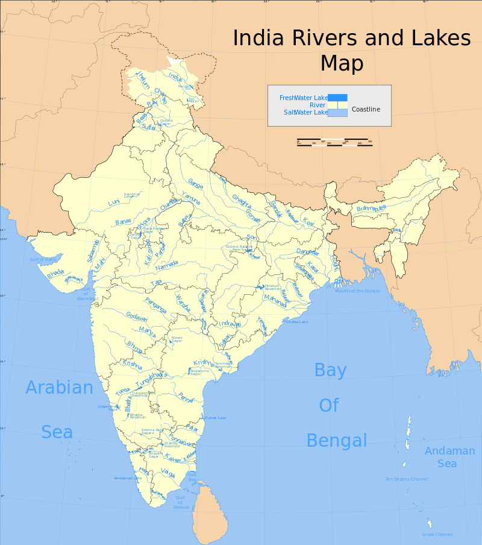

The rivers of India play an important role in the lives of the people. They provide potable water, cheap transportation, electricity, and the livelihood for many people nationwide. This easily explains why nearly all the major cities of India are located by the banks of rivers. The rivers also have an important role in Hindu Religion and are considered holy by all Hindus in the country.
All major rivers of India originate from one of the following main watersheds: Aravalli range Himalaya and Karakoram ranges Sahyadri or Western Ghats in western India Vindhya and Satpura ranges and Chotanagpur plateau in central India
